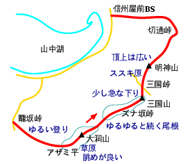

三国山稜
天気：☀
メンバー：S,S,T

11月に車を買い換えてから初めて、新しいCivic で山に出かけてきた。
御殿場ICから籠坂峠へ。峠には山中湖村営の霊園があり、富士山がばっちり見えるほか、10台程の駐車スペースとWCがある。ここに車を置いて出発。
ゆる〜い裏山っぽい道を登るとアザミ平で開けた稜線に出る。行く手へ稜線がゆるゆると続く。たいした登り降りもなく、大洞山へ。右手、山麓の富士スピードウェイからの音が多少気になるが、プロムナードコースだ。
三国山は樹木に囲まれて展望はあまりないが、多くのハイカーが休憩していた。我々もここで昼食にする。三国山から今日唯一の急な下りがあり、舗装道の通る三国峠に着く。ここから明神山へは山中湖と富士山を眺めながらススキ原を登る。祠がある明神山山頂は富士山の方へ広く開けて、今日一番の眺めだ。
ここから切通峠へは歩く人が少ないようで、少し藪っぽい。切通峠は山中湖側へは標高差が50mくらいしかない、へんな峠である。西丹沢・浅瀬へは歩4時間との標識がある。いつか歩いてみたい。ひと気のないグランドやテニスコートの脇を通り、信州屋前バス停へ。ここからバスに乗り、旭ヶ丘で御殿場行きに乗り換えて籠坂峠の車まで戻った。